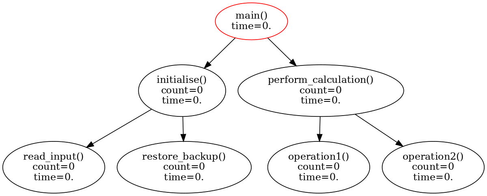

|
profiler
0.0
|


|
|
profiler
0.0
|
|
Full documentation can be found here https://molpro.github.io/profiler.
Framework for timing sections of code in serial and parallel, implemented in C++ with C and Fortran wrappers.
Disclaimer, this is an instrumental profiler and timing statements have to be added to the source code. This can degrade overall performance and distort real profile if attempting to time tight loops.
The profiler works by constructing a call tree and accumulating call count, operation count, and timing duration in each node. Optionally, but typically with significantly greater overhead, CPU time can be recorded also. The maximum depth of profiler tree can also be limited, resulting in any calls to start() that would grow the tree beyond the limit to do nothing. This allows Profiler to be used in production code without degrading performance. The profile tree can be analysed and printed.
In the following simple example, calling start() on profiler moves down the call tree and starts timing and calling stop() moves up to the parent and stops timing. The same effect can be achieved on a scope level by calling push() which returns a proxy that starts profiling on construction and stops on destruction.
Here is a visual representation of the profiler call tree during execution.

At the end of calculation the profiler can be analysed and printed out. By default, the call tree is sorted by wall time at each level and cumulative times are used.
Alternatively, cumulative format can be turned off using prof.str(false) then time spent on each call excluding any children is shown.
During development and debugging it becomes inconvenient to pass a profiler instance down through all function calls. Instead, one can use the weak Singleton interface to access a profiler that was created at higher scope. For example,
The main routine creates a profiler instance that is registered as a static weak_ptr and can be accessed at lower levels through molpro::Profiler::single(). This pattern avoids the pitfalls of the traditional Singleton by keeping Profiler instance on the heap with scoped memory management and only storing a non-owning pointer on the stack.
Profiling is performed by molpro::profiler::Profiler class, there is an alias to it in molpro/Profiler.h. The results of Profiler can be reported using molpro::profiler::report() functions in molpro/profiler/report.h
Profiler can be added to an existing project that uses CMake by downloading it with FetchContent. If Fortran compilers or MPI are enabled during the CMake build than relevant Profiler functionality will be build automatically. Simply link molpro::profiler target to your library.
Profiler uses DependencyManager and hosts its doxygen tag files. You can link your doxygen generated documentation with Profiler using DependencyManager_Doc.
Peter J. Knowles
Marat Sibaev
Iakov Polyak
Rob Welch
MIT License Copyright (c) 2020 Peter James Knowles